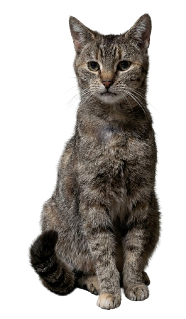

🐾 ESPÉRANCE CHERCHE SON HAVRE DE PAIX 🐾
Un cœur à soigner, une vie douce à lui offrir

🐾 Qui est Espérance ?
Espérance est une jeune chatte tricolore d'environ 4 ans (née en juin 2022), qui vit actuellement à l'extérieur à Orléans. Après une histoire de vie complexe et une adoption difficile, elle s'est retrouvée livrée à elle-même dehors.
Nous sommes ses voisins. Nous faisons tout notre possible pour la nourrir et veiller sur elle, mais notre situation ne nous permet pas d'assumer les soins lourds et réguliers dont elle a besoin pour guérir. Nous lui cherchons donc une personne au grand cœur, patiente, et ayant les ressources financières nécessaires pour prendre soin d'elle.
❤️ Comment l'aider ?
Espérance a besoin d'un véritable parrainage de vie. Si vous disposez d'un extérieur calme et que vous avez la capacité financière d'assumer son suivi cardiaque régulier, vous pouvez lui offrir la vie sereine qu'elle mérite.